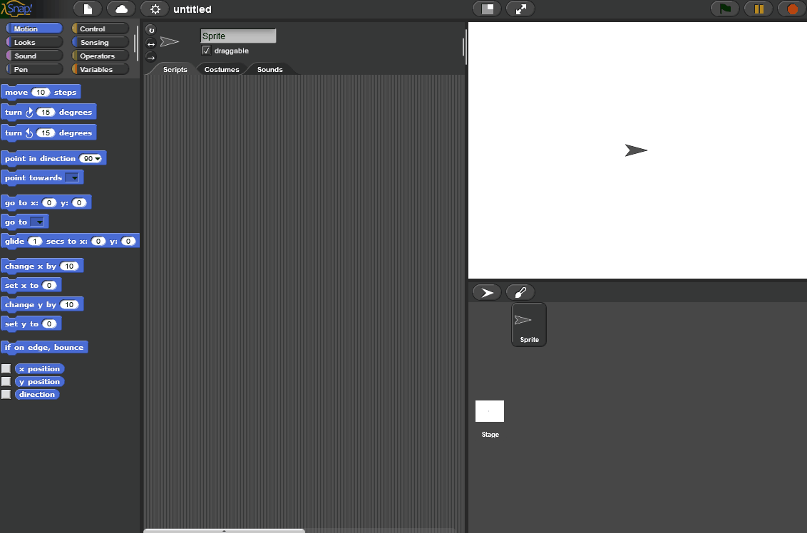
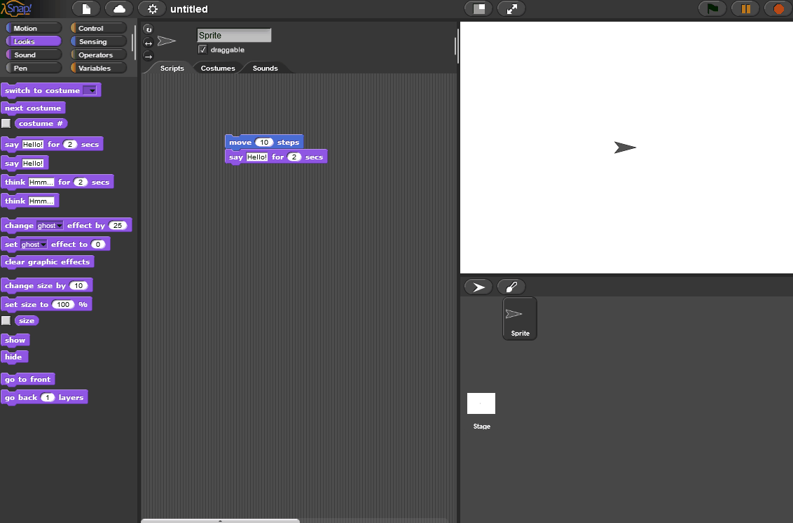
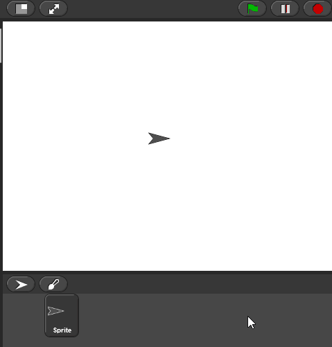
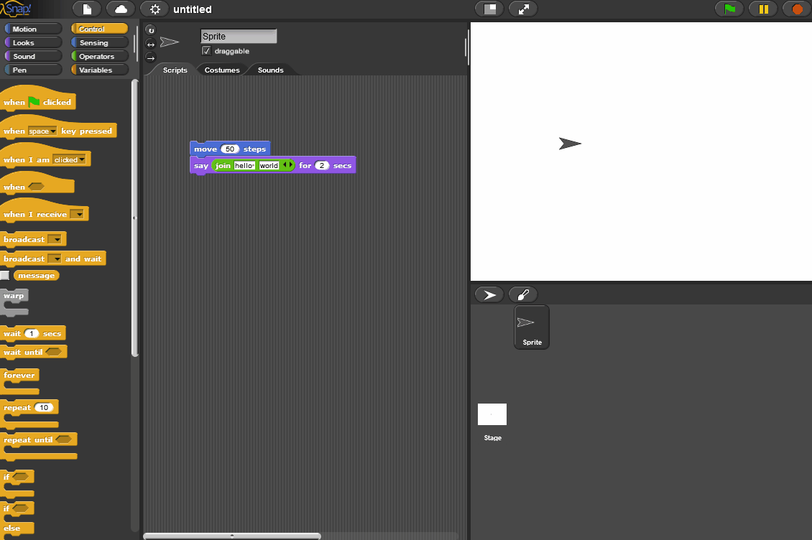
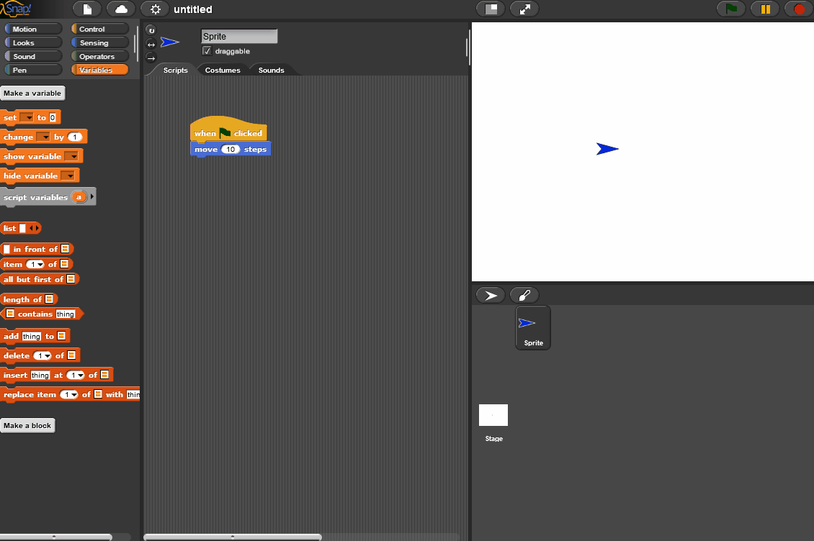
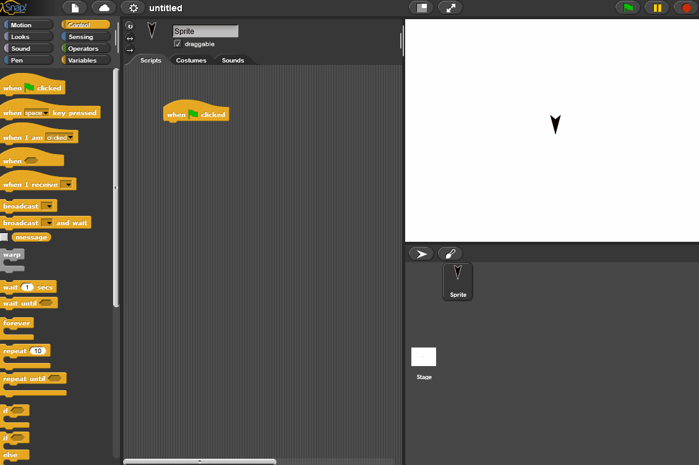
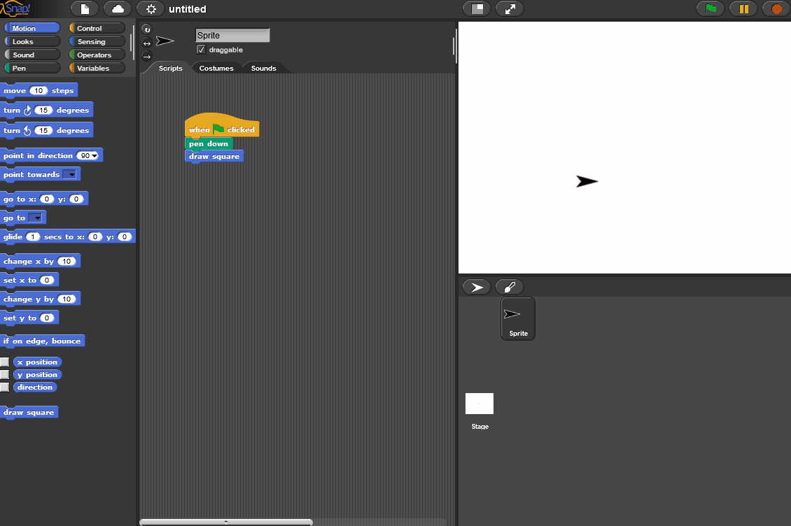
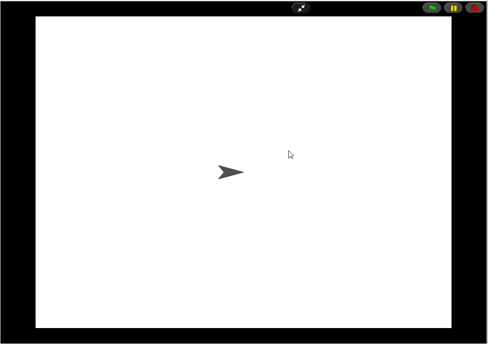

Snap Tutorial
- Blocks, Scripts and Sprites
- Events, Drawing and Input
- Variables, Loops and Custom Blocks
- Opening Exisiting Projects
Snap is a visual, block based programming environment that makes it easy to quickly create games and visualizations. This tutorial will lead you through some of the specifics of using Snap to program.
Blocks, Scripts and Sprites
In Snap, all code is made out of blocks. When you "snap" blocks together, they form a script, which runs from top to bottom. You create a block by dragging it in from the list on the left. There are 8 categories of blocks (e.g. Motion, Sensing), and you can change the category to find more blocks.

Tip: You can also delete blocks by dragging them off of the work area into the palette on the left.
Blocks have inputs that let you tell the block what to do, such as how far a "move" block should go. You can type an input in using the keyboard, or use a block as input.
Scripts control sprites, which are objects that execute your code. When you run a script, the sprite will carry out your commands on the stage, in the top-right corner.

Tip: Notice in the example above, you can click once to run a block
You can move sprites around in the stage. If you lose a sprite, you can always get it back by right-clicking on it (in the bottom-right panel) and clicking "show," as demonstrated below:

Events, Drawing and Input
Snap is event-driven, meaning that scripts start to run when a particular event happens. There are plenty of events, but the one you'll be using is the "when green flag clicked" block. Putting this on top of a script will make it start when the green flag in the top-right corner is clicked.

Tip: There's also a red stop sign button, next to the green flag. You can click this to stop a running script if you accidentally create one that runs forever.
Variables, Loops and Custom Blocks
Snap has all the control structures that other languages have, but they look a little different. You can create, set and reference variables under the Variables category. Be careful - variables keep their values after a script is run, so don't assume a variable will be 0 when your script starts.

Tip: You can see your variables' current values in top-left corner of the stage.
Loop blocks in Snap can be found under the Control category. The main thing to be aware of in Snap is that there is no "for-loop," with a counter variable. Instead, Snap offers a "repeat" block that can run a given number of times, or until a condition is met.

Instead of methods or functions, Snap has custom blocks. These are special blocks that you program to do something, and then reuse in your other scripts.
Tip: You have to click "Ok" or "Apply" before the changes you made to your custom block will take effect.

Tip: If you need to edit a custom block, just right-click on any instance of it and select "edit."
Tip: If you want to clear all pen trails from the stage, just click the "clear" block in Pen category.
Opening Exisiting Projects
Users can share Snap projects using the save to cloud functionality. Shared projects open in Full View mode. To see the program, hit the minimize button. Code might be hard to see so use the scroll bar to view the scripts better. Once a script has been located you can use the edit functionality in the context menu to see the custom code inside a block.
